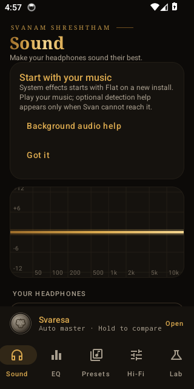
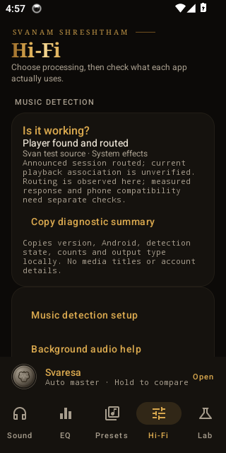
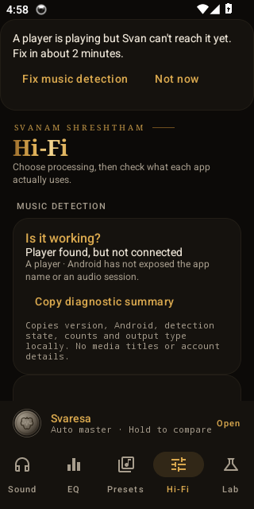
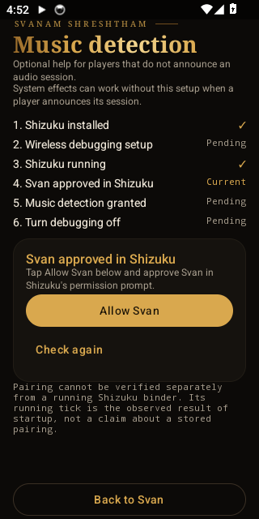
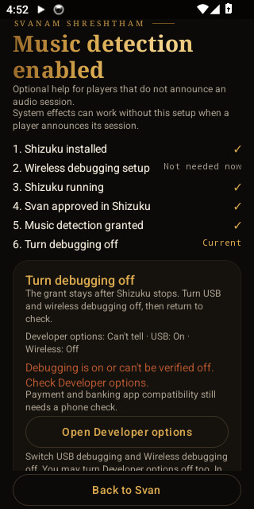

A curve of your own.
Parametric and graphic EQ. Frequency, gain and Q. Up to 256 parametric bands per channel, with your manual settings kept separate from automatic tuning.
Explore the EQANDROID, WITH A SOUND OF ITS OWN
The tracks you love. The headphones you know.
A little more room to make them yours.
Svaresa adapts. Svaramanas follows your taste.
Meet Svan, the system-wide equalizer for Android.
Free public beta · Android 10+ · No root required


Actual app screens · Android emulator
01 / AUTO MASTER
SvaresaYour music keeps moving. Svaresa is built to move gently with it: small, bounded changes when correction is called for, and restraint when it isn’t.
Illustrative curves, not measurements. This page does not process audio.
With capturable playback in the experimental Audiophile engine, Svaresa checks tonal balance and builds a bounded correction plan as you listen.
Live analysis needs a player that allows Android playback capture. Capture-blocked apps cannot use this path, and Bluetooth delay may occur.
On System effects, Svaresa uses your volume, output and the time of day to guide its adaptations. Start here for the recommended beta experience.
System effects has no live source analysis. Actual processing depends on the phone, player and output path.
02 / SOUND GUIDE
SvaramanasSome days, warm. Some tracks, punchy.
Sometimes, you want the voice a little closer.
Choose a sound feel and the instruments you want to bring forward. Svaramanas turns your priorities into a tuning plan with explicit limits.
A fuller body, with a softer top.
Explore the descriptions here. Choose and hear the actual tuning in Svan.
Take a closer look
03 / THE DETAILS ARE YOURS
Sound, considered.Let Svaresa lead. Fine-tune its applied gains.
Or return to your own saved manual curve.
Parametric and graphic EQ. Frequency, gain and Q. Up to 256 parametric bands per channel, with your manual settings kept separate from automatic tuning.
Explore the EQFind your headphones or IEMs in AutoEq data. Load a measurement-based correction, or import a profile you already trust.
Find your starting pointThe blind listening tool hides A/B identity and matches loudness for native-engine renders. Let your preference shape the choice.
About the beta04 / INSIDE SVAN
Brass on warm charcoal.
Purpose in every control.
Original Android emulator screenshots with demo settings. Real phone, player and output compatibility varies.
THE FEATURE TOUR
Svan has five tabs: Sound for your headphones and tuners, EQ for the curve, Presets for saving and backup, Hi-Fi for engines and detection, and Lab for listening tests. The numbered gold markers on each screen match the notes beside it.
01 / EXTENDED EQ
This is the control room. One graph shows the sound you are actually going to hear, and every part of it is a thing you can touch.
One tap turns Svan on or off for everything it is attached to. If something ever sounds wrong, this is the first place to look, and the quickest way to hear your music exactly as it was.
Svaresa EQ is the curve Svan suggests and keeps adjusting. Your EQ is yours alone and never moves unless you move it. Pick one and the other steps aside, so the two never fight over the same bands.
Dragged a band too far? One tap steps back. Continuous drags count as a single edit, so you are not undoing a hundred tiny nudges.
Every dot is a band. Drag sideways to change the pitch it works on, up or down to boost or cut, anywhere from 20 Hz to 20 kHz and up to 12 dB either way. Tap a band to type an exact value. Under the hood you get up to 128 manual bands and filter types including peak, shelf, low-pass, high-pass, band-pass, notch and all-pass.
Parametric gives you a handful of precise bands. Graphic gives you classic faders in 10, 15, 31 or 64 bands. Switching between them converts your sound and tells you how closely the conversion matches, with undo ready if you do not like it.
Preamp, headroom and protection live here. Svan can add headroom for you when a boost would clip, and it explains what is switched on and why, so you are never guessing.
This strip stays above the tabs wherever you are. Hold it and you hear your music without Svan; let go and it returns. It is the fastest honest test of whether a change helped, or just got louder.
02 / SVARESA · AUTO MASTER
Svaresa is for the days you would rather listen than tweak. It watches what changes your sound without you noticing, and nudges the EQ carefully. It is a set of rules written down in the open and bounded by hard limits, not a mysterious black box.
Turn Sound guide and Auto master on or off together. When it is off, nothing here touches your music.
It adapts to your volume, your output and the hour of the day, and corrects what it can actually measure. It does not guess which instruments are playing, and it does not widen your stereo image behind your back.
Some songs have a note that rings and rings, a boomy low-mid or a harsh edge that builds up. This calms it only while it lasts, never by more than 1.5 dB in one band or 3 dB in total, and short punches like a snare hit are left alone. It only ever cuts. It never adds. Needs the Audiophile engine and audio the player allows Android to capture.
Human ears lose bass and treble at low volume. Using the ISO 226 equal-loudness standard, Svaresa puts back a little of what quiet listening takes away: up to about 6 dB of bass and 3 dB of treble, and gentler on a phone speaker. Turn the volume up and the help fades out.
03 / SVARAMANAS · SOUND GUIDE
If Auto master is the assistant, Sound guide is the instrument. You say what you want in everyday words and Svan turns that into EQ moves you can still see and edit.
Sound guide shapes the tone around your priorities but stays inside the same gain, headroom and loudness limits as everything else. Your taste, minus the clipping.
Balanced is true to the recording. Warm is a fuller body and softer top. Bright is open, airy detail. Punchy is a tight, hard-hitting low end. Spacious widens the stage and adds air. Intimate brings the voice close. Each one is a starting point, not a lock.
Warm is selected here. Change your mind as often as you like: nothing is saved over your own EQ, and Reset takes you back to flat.
The list scrolls on, and each choice carries its own strength setting. Set it to zero and it is exactly neutral.

04 / HEADPHONE CORRECTION
Every pair of headphones has a shape of its own: a bump here, a dip there. Svan lets you correct that first, so any tuning you do afterwards is on a clean base.
Type your model and apply a correction built from published measurements by oratory1990, crinacle, Super Review, Rtings and others, gathered through the open AutoEq project. Boosts are capped (6 dB broad, 3 dB in the upper treble) and cuts at 12 dB, so a bad measurement cannot hurt your ears or your drivers.
Import a measurement file or an AutoEq ParametricEQ.txt yourself. Svan fits it, shows you how closely the final filters match, and remembers it after a restart.
It is advice most people need: change one thing a small step at a time, compare at matched volume, and back off if bass turns boomy or tiring. Louder always sounds better at first, and this nudges you to be fair to the original.
Off, Clean impact, Full impact and more. Presets move several controls together, so you get a sensible starting point before you fine-tune.

05 / BASS TUNER
Bass is where most equalizers go wrong: more of it usually means more mush. These dials separate how much, how low and how it feels.
Off, Clean impact and Full impact apply a whole profile at once. Use them as a first move, then refine with the dials.
The size of the boost in dB, moved in tiny 0.1 dB ticks. Start with one tick, not ten.
Anywhere from deep sub-bass at 40 Hz to mid-bass punch at 160 Hz. Pick the part of the low end your headphones are actually good at.
Let notes sustain and bloom, or have them punch and stop clean so kick drums tighten up. Natural sits in the middle.
The description under the dials is honest about its limits: with the Audiophile engine this is a native transient shaper, on System effects it is an approximation, and it has been tuned on test signals rather than every kind of music.
A separate set of controls for the centre of the sound and the upper mids, where voices sit, with its own listening tip. Turning the knob works two ways: rotate around the rim or drag sideways through the middle. Double-tap resets, and tapping the number lets you type a value.

06 / PRESETS AND BACKUP
A sound you love should not live and die with one phone. Presets and backups make your setup portable.
The panic button. It clears every shaping layer, including headphone correction, and returns to neutral in one tap. It is also the cleanest way to start a fresh comparison.
Load a ParametricEQ.txt you downloaded from autoeq.app straight into Svan. No conversion, no spreadsheets.
Copied APO or AutoEq text from a forum post? Paste it and it becomes a curve you can edit and save.
Give it a name and it appears in your list. If Auto master is in charge, Svan saves the curve you are actually hearing rather than a hidden manual one.
Writes your settings to a file you control. Move to a new phone, reinstall, or switch between signing keys without redoing an evening of tuning. Do this before installing a new beta.
Each preset shows the shape of its curve, how many bands it uses and its preamp, so you can tell them apart at a glance. The bin deletes one.

07 / BLIND LISTENING
Everybody hears what they expect to hear. Blind listening removes that, and it is the closest thing in the app to an honest second opinion.
You hear the same excerpt twice: once as it was, once through your settings, including headphone correction and Svaresa. Which is which stays hidden until you vote. The settings are frozen for the clip, and A and B are loudness-matched so the louder one cannot win by cheating.
Pick a short WAV and compare away. This also works for music that Android will not let Svan capture.
Capture a short piece of what is already playing, using permission you have already given. Nothing is recorded behind a blocked stream.
Clips live in memory only and vanish when you close the screen. Only your votes are saved, on your phone, and you can wipe them.

08 / FIRST RUN
Install, open, play something. No wizard stands between you and your music. Svan starts on the safest settings and only asks for help if it cannot reach your player.
A fresh install starts on System effects with a flat curve, 0 dB preamp and the Audiophile engine off. You hear your music untouched until you decide otherwise.
Some phones, notably TECNO, Infinix, Xiaomi, Realme, OPPO and Samsung, stop apps in the background. This opens plain steps and Android settings links for your brand. Svan does not change any setting for you.
The brass line across the middle is your starting point: no boost, no cut. Everything you do from here is visible against it.

09 / IS IT WORKING?
The most common question on any system-wide equalizer is "Is this actually doing anything?" Svan answers it on screen instead of leaving you to wonder.
It tells you whether a player was found, whether a connection is routed, and which engine is handling it. If Android does not expose the information, it says "can’t tell" rather than a comforting guess.
It reports what was observed (here, a test source routed through System effects) and is upfront that measured response and phone compatibility need separate checks.
One tap copies versions, detection state, counts and the output type. It contains no song titles, account data or device addresses, and nothing is uploaded or shared automatically.
Both live here too, so you can come back to fix things whenever you want.

10 / WHEN A PLAYER IS OUT OF REACH
Some players do not tell Android which audio session they use. Rather than silently doing nothing, Svan notices and offers help.
It only appears when music is playing but Svan cannot reach it. "Fix music detection" starts a roughly two-minute setup and "Not now" hides it. You can bring it back later from Hi-Fi.
This distinction matters. A player existing, a connection existing and audio actually being processed are three different things, and Svan keeps them apart.

11 / MUSIC DETECTION WIZARD
For players that need it, a short guided setup grants Svan a narrow, fixed permission via Shizuku. Each step shows its real status, not a hopeful tick.
Shizuku installed, wireless debugging set up, Shizuku running, Svan approved, detection granted, debugging turned off again. Ticks are only shown for things Svan can actually observe.
Tap Allow Svan and confirm in Shizuku’s own prompt. Svan can grant itself one fixed permission, read audio reports, and nothing arbitrary beyond that.
Pairing cannot be checked separately from a running Shizuku, so the wizard tells you exactly that. It will not tick a box it cannot verify.

12 / FINISHING SAFELY
The last step is about leaving your phone as safe as you found it.
Once detection is granted, USB and wireless debugging can go back off. The grant stays until Shizuku stops, and Svan re-checks when you return.
If debugging is still on, or Svan cannot tell, the warning stays in red. It does not claim success it has not observed, and it reminds you that banking and UPI apps may still need a phone check.
Jumps straight to the right Android screen. If a settings shortcut is unavailable, written instructions take its place.
UNDER THE HOOD
Features that do their work quietly, with no screen of their own.
TWO ENGINES, ONE CHOICE
System effects works through Android’s own audio effects, needs no special access and is where everyone starts. The Audiophile engine captures the audio your player allows and runs Svan’s own 64-bit signal chain, which makes it possible to analyse music, shape the stereo image and render blind comparisons. It is experimental, and Svan tells you which engine is actually carrying each player.
PRECISION ENGINEERING
Digital EQ bends out of shape near the top of the spectrum. Oversampling fixes that. In a synthetic test of a 16 kHz boost, the worst error across 8–19.5 kHz measured about 5.6 dB with no oversampling, 1.1 dB at 2× and 0.24 dB at 4× (Audiophile). Higher modes cost more processing and add a little delay. Those numbers come from a desktop test, not a phone, so measure on yours before picking Extreme.
PEAK PROTECTION
Svan predicts how much headroom a boost needs and reduces the level before it clips (Auto headroom). If a sample still overloads, a fast protector pulls the level down and lets it recover over a quarter of a second. On the Audiophile engine, a look-ahead stage estimates the reconstructed peak and keeps it under −1.3 dB. That adds roughly 4 to 5 ms of delay, it is not a certified loudness meter, and it cannot reach audio that other apps send down their own direct paths.
SMOOTH EDITS
Live EQ edits crossfade between the old and new curve over 10 ms, and preamp changes ramp the same way. Stereo changes crossfade over 20 ms. In controlled tests that turned abrupt steps roughly 480 times smaller. This is a measured engineering result, not a promise that every extreme edit is inaudible on every phone.
TOUCH THAT FEELS RIGHT
Knobs turn in 0.1 dB, 1 Hz and 1% ticks, and they ignore accidental vertical scrolls. Faders move relative to where you grabbed them, so touching the track never makes the gain leap. Double-tap resets, tap a number to type it. There is no vibration or click, by design.
THE QUIET HOURS
From about 22:30 to 05:30, with an hour of fading in and out, Svaresa can trim a little sub-bass and the sharpest part of the upper mids and gently even out loud and quiet moments. Late-night listening stays comfortable without waking the house. Every automatic layer has its own switch.
HEADPHONE RECOGNITION
When Svaresa recognises the connected headphones by name, it looks for an exact AutoEq match, falls back to a general Harman-style correction, and removes it again when you unplug. It will never override a correction you chose yourself.
STEREO DETAIL, BETA 2
Two optional controls in the first Orchestral amplifier row bring out detail already in the stereo recording, with clearer per-player notes on what is native and what is approximated. They are tonal controls, not stem separation or magic binaural beats, they change nothing in mono and they need the Audiophile engine. There are no screenshots of these yet, so none are shown.
PLAYBACK CONTINUITY
Capture output is primed before play, grows its buffer if it underruns and never shrinks mid-song. If glitches keep happening, Svan stops capture and hands the player back to System effects with a visible message. This trades a little latency for continuity. Bluetooth delay is not solved by it.
MUSIC ONLY
Svan rejects notification sounds, calls, alarms, UI clicks and known utility apps, so those play on Android’s normal path. Known music apps are admitted straight away and unfamiliar ones must keep playing for a moment first. Svan never silences your notifications or face unlock.
PRIVACY BY DESIGN
There is no notification-listener, SMS, accessibility or device-admin access. Audio is processed on the phone. The only network use is downloading headphone measurements from GitHub when you ask for them. The compiled release manifest is checked in CI against a permission allowlist. That is a code review, not an independent security audit.
OPTIONAL FLOATING CONTROLS
An optional bubble over other apps gives you tap-to-open and hold-to-compare without leaving your player. It needs the “Display over other apps” permission, which Svan never turns on by itself. The core EQ works without it.
Screens are original Android emulator captures with demo settings, shown unchanged; the numbered markers are overlays added by this page. Measured figures come from synthetic tests, not listening trials, and real phone, player and output compatibility varies. Features without screenshots are described, not drawn, because we have not captured them yet.
BEFORE YOUR FIRST LISTEN
An early beta, with room to grow.
Here’s what to expect.
Svan applies EQ to eligible Android audio sessions. Reach depends on your phone, player and output. Start with System effects and use Hi-Fi’s “Is it working?” view to check the connection.
Live Svaresa analysis needs the experimental Audiophile engine and playback the player allows Android to capture. Capture-blocked apps cannot use that engine.
Read the compatibility notes ↗︎No root is needed. Fresh installs start with System effects, a flat curve and 0 dB preamp. Shizuku is an optional setup helper for music detection when a player is unreachable; it isn’t required to open the app.
Read the setup guide ↗︎Svaresa is an on-device, rule-based controller today. It uses available measurements and explicit limits. Live tone corrections need capturable playback; System effects uses volume, output and time-of-day context.
It is experimental. It captures permitted playback, processes it through Svan’s 64-bit DSP chain and plays it back. Android asks for capture permission for each session. It can add delay, particularly over Bluetooth, and delay or echo has been reported on one phone.
Use System effects if that happens. The capture engine cannot provide bit-perfect or USB DAC passthrough.
Svan processes audio locally and does not upload captured playback. Headphone data is downloaded from GitHub when requested. Logs and screenshots are shared only if you choose to share them.
Read the beta privacy notes ↗︎The beta is free for personal evaluation. The code is publicly readable on GitHub, but the original Svan code is All rights reserved. Third-party data, code and fonts retain their own licences.
Try it with your phone, player and headphones. Report your Android version, output route, selected engine and what you heard. Even a report that processing didn’t work is useful. Listener preference and device compatibility are still being evaluated.
Send a device report ↗︎OWNER-SIGNED BETA 2 / 7 OCTOBER 2026
These changes are in the owner-signed 0.5.6 beta 2, now available below. The APK’s signature, package, permissions and 16 KB alignment were checked, and every required source CI job passed. Phone performance and listening qualification are still pending. The tested app version remains 0.5.6, versionCode 13.
Phone performance, battery use and isolated loudness- and delay-matched listening checks on TECNO and LG remain pending. Export settings before installing; previews use a different signer and need migration. Keep Play Protect enabled. The screenshots in the feature tour are unchanged and do not show these new controls.
Read the implementation and verification status ↗︎
SVAN 0.5.6 / PUBLIC BETA 2
Try Svaresa. Explore Svaramanas.
Find your sound, and tell us what you hear.
Svan 0.5.6 beta 2 · 5.2 MB · Android 10+ · arm64 & x86_64 · No root
Direct download from this page. No account, no store, no GitHub needed.
This file is the original owner-signed build and has not been rebuilt, re-signed or edited. Compare it with a trusted file-hash tool.
File SHA-25684ddca6e6a05344cf3a316945ef86c425461bbdcb74e61cc858ba7269591959e
Signing certificate SHA-2569cb9daca3b49fbdd17683d45dfb069fa9c6d05e3733934795f92546fef696b0f
Download the checksum file
Coming from an earlier preview? Export your settings first: previews used a different signing key, so they need a one-time migration.
An early beta. Start with System effects. Device and player compatibility varies.
Read the release notes and installation instructions before installing.